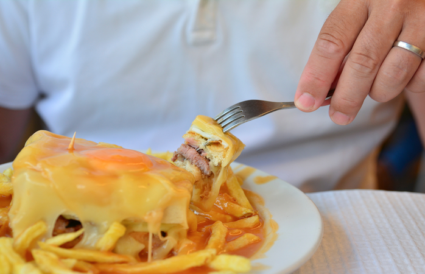

O arroz de pato é quase um risoto, feito com carne de pato que vai ao forno e é servido com chouriços por cima, mais uma delícia da culinária portuguesa.
R$15.99
+
Bacalhau Bras
Bacalhau à Brás é um típico prato português de bacalhau. Sendo um dos pratos mais populares confeccionados com este peixe, consiste em bacalhau desfiado, batata palha frita, cebola frita às rodelas finas, ovo mexido, azeitonas e salsa picada. É muito consumido em Portugal e também em Macau. .
R$39.99
+

Francesinha
Francesinha é um prato típico e originário da cidade do Porto, em Portugal. A francesinha tem a forma de um sanduíche e é constituída por linguiça, salsicha fresca, fiambre, carnes frias e bife de carne de vaca, coberta com queijo posteriormente derretido.
R$24.99
+
Sardinha
Muito presente nas festas de São João e de Santo Antônio, as sardinhas são feitas assadas na grelha e servidas normalmente com pimentões verdes assados e batatas cozidas.
R$9.99
+
Alheira
A alheira é um embutido (como se fosse uma linguiça), é defumada e pode ser feita com carnes de caça, porco ou aves. Podem ser fritas, assadas ou então envolvidas em massa folhada. É um prato delicioso!
$2.99 un
+
Cozido à Portuguesa
Uma mistura para fortes: leva feijão, batata, couve, nabo, cenoura, carne de porco, boi e frango, além de chouriço e morcela. Um prato super tradicional de Portugal.
R$24.99
+
Arroz de Tomate
O arroz de tomate é mais uma comida típica de Portugal, trata-se de um arroz com molho de tomate e é servido como acompanhamento para carnes e peixes.
R$19.99
+
Arroz de feijão
O arroz de tomate é mais uma comida típica de Portugal, trata-se de um arroz com molho de tomate e é servido como acompanhamento para carnes e peixes.
R$11.99 un
+
Queijo Serra da Estrela
O arroz de tomate é mais uma comida típica de Portugal, trata-se de um arroz com molho de tomate e é servido como acompanhamento para carnes e peixes.
R$11.99
+
Queijo de Azeitão
O arroz de tomate é mais uma comida típica de Portugal, trata-se de um arroz com molho de tomate e é servido como acompanhamento para carnes e peixes.
R$8.99
+
Broa
A broa é uma comida típica de Portugal, trata-se de um pão de milho e centeio. Normalmente é servido como entrada das refeições ou então pode ir ralado em cima de peixes como o bacalhau.
R$13.99
+
Pastel de Nata
A broa é uma comida típica de Portugal, trata-se de um pão de milho e centeio. Normalmente é servido como entrada das refeições ou então pode ir ralado em cima de peixes como o bacalhau.